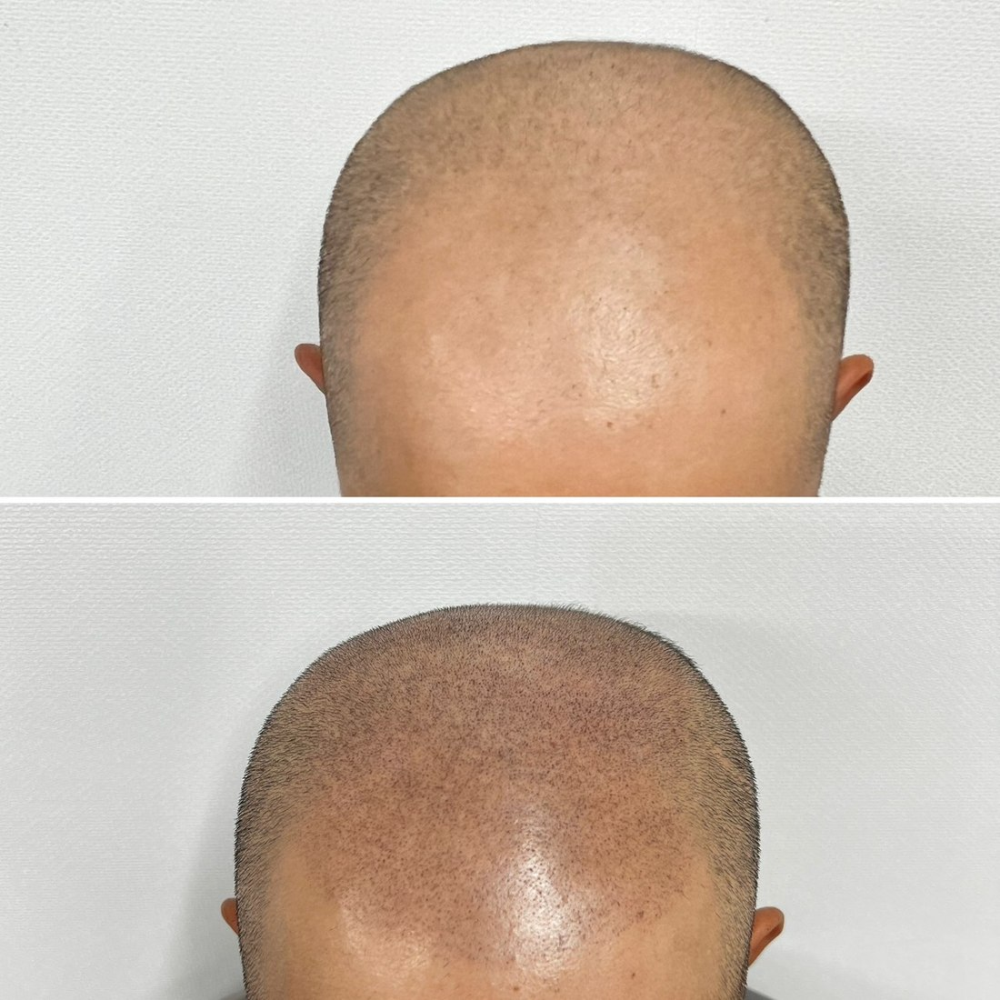
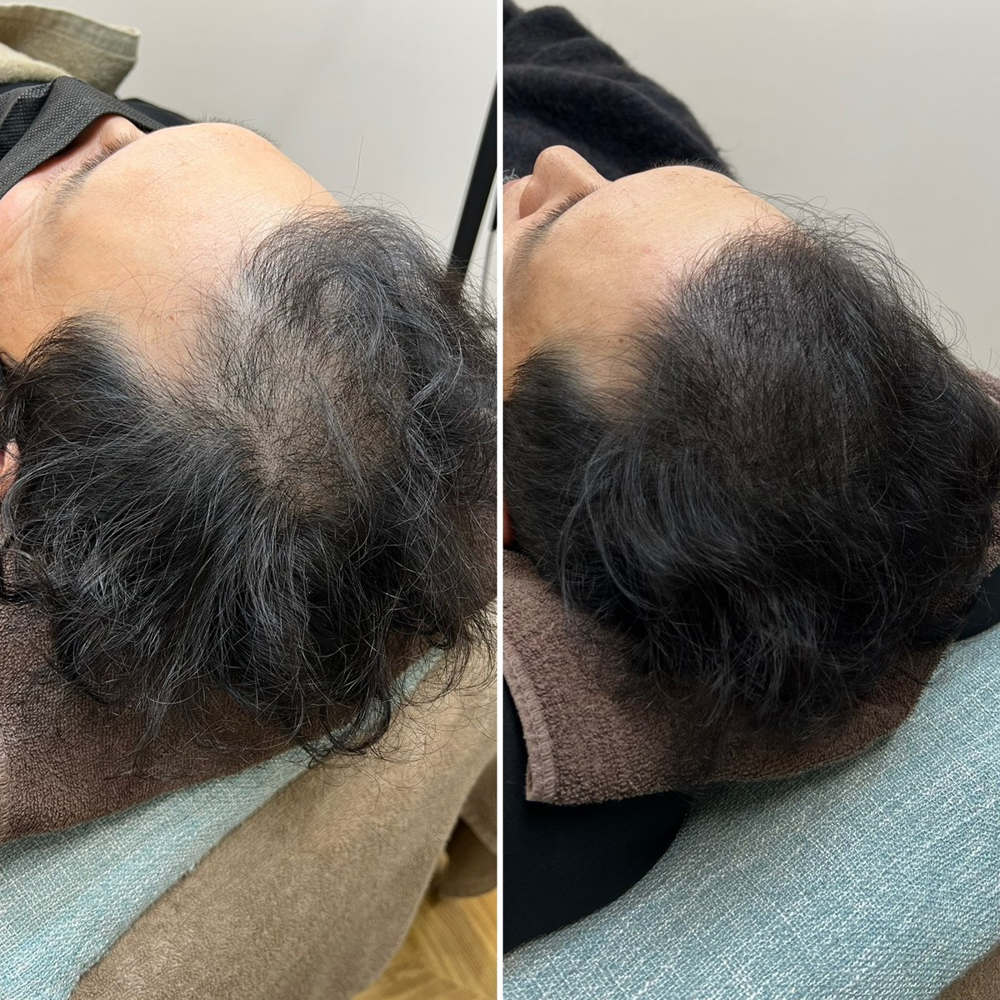
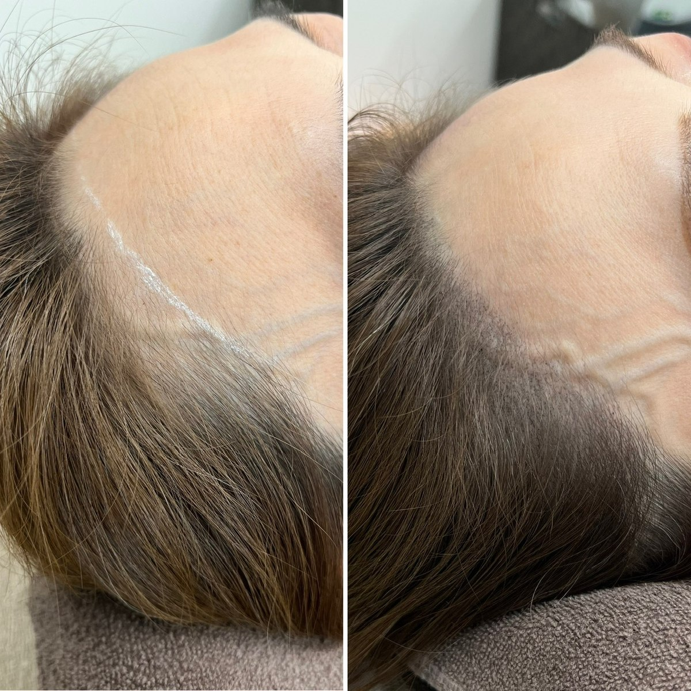
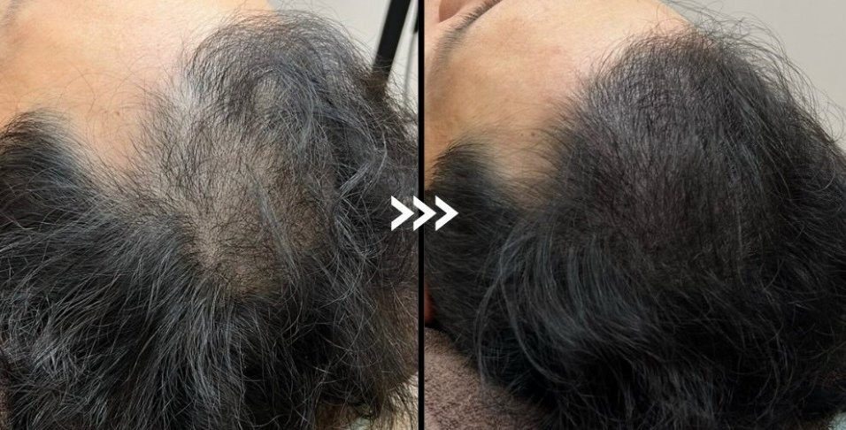

Before / After
症例をもっと見る →自然な仕上がりで、印象が変わる。
数回に分けて施術することで、自然な仕上がりのまま少しずつ印象を変えていきます。


※仕上がりには個人差があります。
地肌の透け感を自然にカバー。即日施術可能・メンズ／レディース対応。自信を取り戻すための、新しい選択肢です。

Precisionその悩み、スカルプインクなら周囲にバレずに自然にカバーできます。

Scalp Ink（スカルプインク）は、頭皮に極小のドットで色素を入れ、まるで本物の毛が生えているように自然な陰影を再現するデザイン技法です。医療行為ではなく、見た目を自然に整える新しい選択肢の頭皮タトゥーです。
髪を増やすのではなく自然な立体感と密度感を演出し、あなたにとってのベストをご提案させていただきます。

数回に分けて施術することで、自然な仕上がりのまま少しずつ印象を変えていきます。

※仕上がりには個人差があります。
施術回数を分けることで自然に変化し、周囲にバレずにお悩み部分をカバーできます。
1回の施術は約1〜2時間。1週間ごとに通えるので、約1ヶ月で理想の仕上がりへ。
麻酔不要で、痛みの少ない施術です。
日本タトゥー衛生協会の厳しい知識・技術テストに合格した認定アーティストが担当。安心してご相談ください。
お悩みやご要望を丁寧にヒアリングします。
骨格やバランスを見ながら、最適なデザインを決定します。
専用機器で頭皮に色素を丁寧に入れていきます。
施術後の注意点やケア方法をご案内します。
※本施術は医療行為ではありません。※発毛・育毛・治療を目的としたものではありません。※仕上がりには個人差があります。
お悩み部分のお写真などをお送りいただければ、期間や料金などの目安を事前にご案内できます。
LINEで相談する →